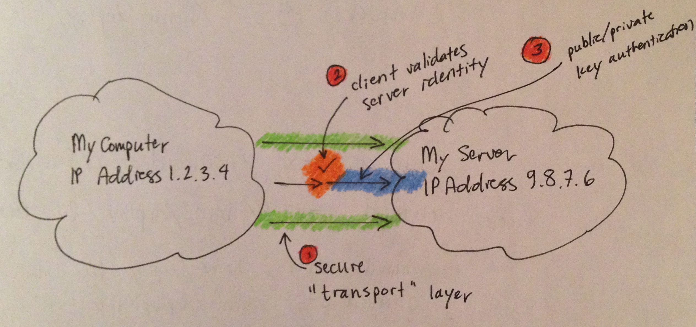
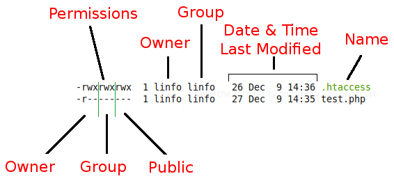
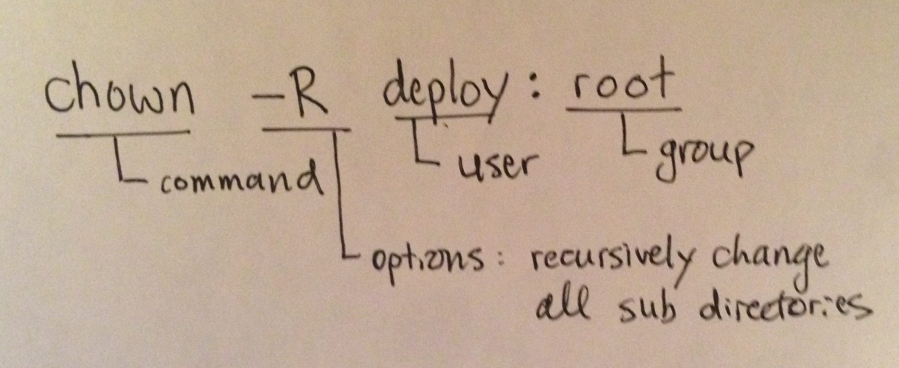

4 sessions
Session 1 - What are servers? What is the internet?
Session 2 - How to interact with servers
Session 3 - How to setup and use NGINX
Session 4 - How to use Vagrant
Session 1 Review

- URLs are really IP addresses
- Servers are simple computers in big warehouses
- HTTP requests and responses are just text files
But ...
To control servers we'll cover
- SSH - (secure shell)
- Unix users
- Unix groups
- Unix permissions
- Packages
SSH - Secure Shell
encrypted tunnel connection between to 2 "clouds".
Exercise 1 - SSH into your server
ssh root@9.8.7.6 # (it will ask you for your password)Enter the follow commands and write down the output
whoami
pwd
echo "I am in the cloud"
Windows users: use git bash
Mac users: use the terminal
Questions about Exercise 1
whoami # OUTPUT => root
Why were you root?
pwd # OUTPUT => /root
What does this tell you about your "physical" location?
echo "I am in the cloud" # OUTPUT => echo "I am in the cloud"
Did this command surprise you?
Update our cloud illustration

Unix users
Being the "root" user is great, but ...
- authenticating by typing in password = weak
- allowing root to login into your server = weak
- we want to learn about Unix users
weak = security vulnerability, you get hacked
therefore, we're going to create another user!
Unix users
What did the root user have?
- Username
- Home Directory
shell command = useradd + options
- Password
shell command = passwd
Yes, "passwd". Omit the "o" and "r".
Uxix shell commands

Exercise 2 - Step 1 - useradd
Command
useradd
Argument
deployOptions
key = -d
value = /home/deploy
key = -m
value =
key = -s
value = /bin/bashWhat's the resulting command?
_______ __ ______ ___ __ _______ _________Exercise 2 - Step 2 - passwd
Command
passwdArgument
deployOptions
(none)Resulting Command
______ _______Enter password = "gdi" twice
Exercise 2 - Step 3 - test it
SSH into server as new "deploy" user
ssh deploy@9.8.7.6Test who you are
whoamiTest where you are
pwdTest out the "echo" command
echo "I am in the cloud"Update our Cloud picture

Unix groups and permissions
What can a user do once they login into the server?
How do we control what happens on the server?
Macs have a "System Adminstrator"
Window machines have an "Admin"
Unix systems have a sudo group
Unix groups
sudo group memebership grants power to do anything
Selectively grant permissions to users
by adding them to groups
Unix groups
Add user to group:
usermod -aG sudo deployUnix permissions
Permissions are access rules set on directories and files.
3 types of access rules:
- r --- read
- w -- write
- x --- execute
Unix Permissions
There's math in Permissions
http://krnlpanic.com/wp/wp-content/uploads/2013/03/chmod.jpg
- r --- read = 4
- w -- write = 2
- x --- execute = 1
Unix Permissions
Change owner and/or group
chown
Unix Permissions
Change permissions (read, write, execute)
chmod
Numbers - set user, group, and others all at once
sudo chmod 755 /home/deploy/files.txtWords - Edit selectively
sudo chmod u+w /home/deploy/files.txtsudo chmod g-r /home/deploy/files.txtWords - Set multiple
sudo chmod ux=rx /home/deploy/files.txtExercise 3 - Step 1
Add deploy to "sudo" group
ssh into server as "root"
ssh root@9.8.7.6Command
usermodArguments
arguemnt 1 = sudo
argument 2 = deployOptions (required)
key = -aG
value = What's the resulting command?
______ ___ ______ _______Exercise 3 - Step 2
Ensure deploy added to group
SSH into server as "deploy"
ssh deploy@9.8.7.6Command
groupsArgument (optional)
# (blank - defaults to current user)
deployWhat's the resulting command?
______
______ _______Exercise 3 - Test out sudo
Use sudo with echo
sudo echo "I have power"Update our Cloud picture

To control servers we'll cover
- SSH - (secure shell)
- Unix users
- Unix groups
- Unix permissisions
- Packages
Unix Packages
A "Package" is a software program you install
Default package manager for Linux/Ubuntu
apt-get
What's a package manager?
Gathers package lists from multiple sources

Install nginx walk through
Update the apt-get package lists
sudo apt-get updateInstall nginx
sudo apt-get install nginxWhat happened?
deploy@intro-00:~$ sudo apt-get install nginx
[sudo] password for deploy:
Reading package lists... Done
Building dependency tree
Reading state information... Done
The following extra packages will be installed:
libgd2-noxpm libjpeg-turbo8 libjpeg8 libxslt1.1 nginx-common nginx-full
Suggested packages:
libgd-tools
The following NEW packages will be installed:
libgd2-noxpm libjpeg-turbo8 libjpeg8 libxslt1.1 nginx nginx-common
nginx-full
0 upgraded, 7 newly installed, 0 to remove and 56 not upgraded.
Need to get 882 kB of archives.
After this operation, 2,692 kB of additional disk space will be used.
Do you want to continue [Y/n]?
Y
Get:1 http://mirrors.digitalocean.com/ubuntu/ precise-updates/main libjpeg-turbo8 amd64 1.1.90+svn733-0ubuntu4.3 [111 kB]
....
Setting up nginx (1.1.19-1ubuntu0.5) ...
Processing triggers for libc-bin ...
ldconfig deferred processing now taking place
deploy@intro-100:~$
How do we figure out where
nginx was installed?
we didn't tell if where to install
apt-get didn't tell us
what if there was a tool ...
there is a tool
where
where # => /etc/nginx
Ok, it's at /etc/nginx
Let's go there!
Wait, how do we get there?
Unix command to the rescue!
cd - "change directory"
cd /etc/nginxIf time allows - SSH public/private key auth
- ssh-key gen - follow github tutorial - https://help.github.com/articles/generating-ssh-keys
- ssh deploy@9.8.7.6
- mkdir .ssh
- touch authorized_keys
- nano authorized_keys
- copy and paste id_rsa.pub
- save and close file
- ssh deploy@9.8.7.6